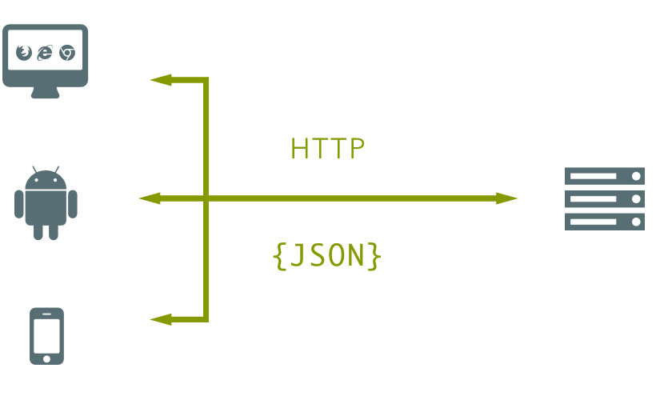
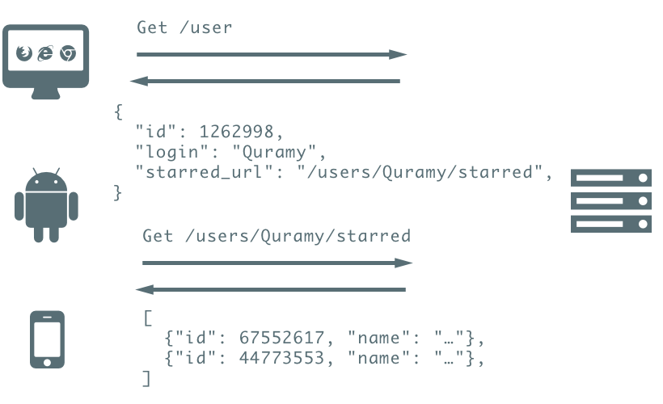
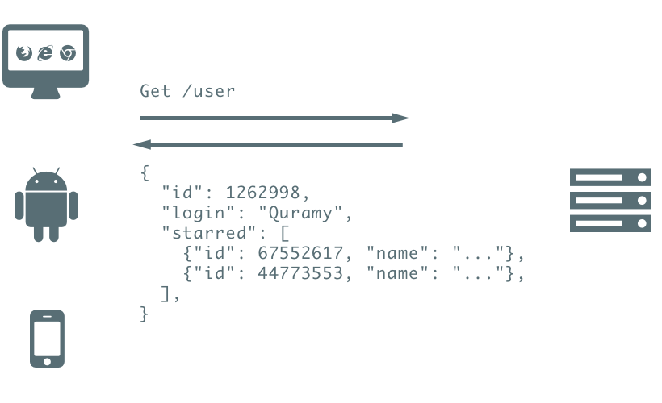
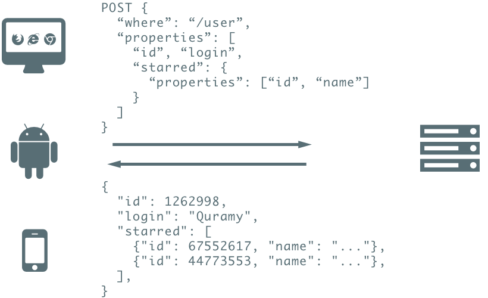
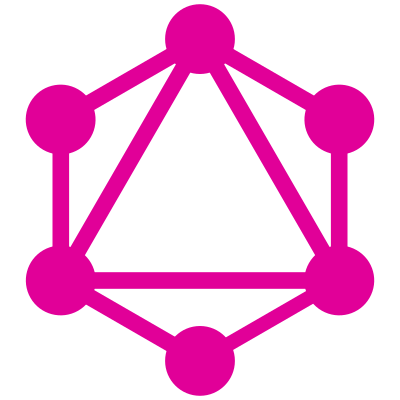
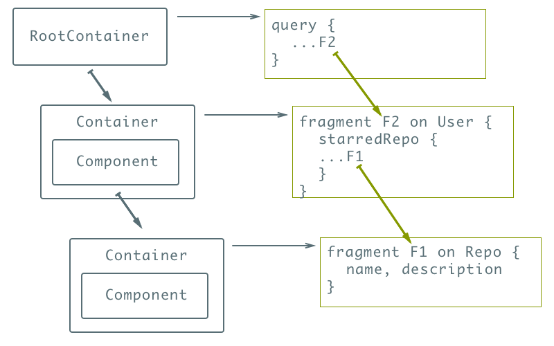
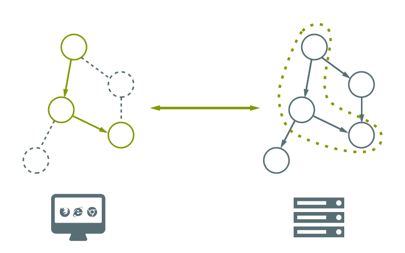

<!doctype html>
<html lang="en">

    <head>
        <meta charset="utf-8">

        <title>Graph API: GraphQL and Falcor</title>

        <meta name="apple-mobile-web-app-capable" content="yes">
        <meta name="apple-mobile-web-app-status-bar-style" content="black-translucent">

        <meta name="viewport" content="width=device-width, initial-scale=1.0, maximum-scale=1.0, user-scalable=no, minimal-ui">

        <link rel="stylesheet" href="bower_components/reveal.js/css/reveal.css">

        <link rel="stylesheet" href="css/theme.css" id="theme">


        <!-- For syntax highlighting -->
        <link rel="stylesheet" href="bower_components/highlightjs/styles/zenburn.css">

        <link rel="stylesheet" href="resources/fonts/liberationsans_regular_macroman/stylesheet.css">

        <link rel="stylesheet" href="https://use.fontawesome.com/48216ef867.css">

        <!-- Printing and PDF exports -->
        <script>
            var link = document.createElement( 'link' );
            link.rel = 'stylesheet';
            link.type = 'text/css';
            link.href = window.location.search.match( /print-pdf/gi ) ? 'bower_components/reveal.js/css/print/pdf.css' : 'bower_components/reveal.js/css/print/paper.css';
            document.getElementsByTagName( 'head' )[0].appendChild( link );
        </script>

        <!--[if lt IE 9]>
        <script src="bower_components/reveal.js/lib/js/html5shiv.js"></script>
        <![endif]-->
    </head>

    <body>

        <div class="reveal">

            <div class="slides">

                
                    
                        
    <section data-markdown="" data-separator="^
?
---
?
"><script type="template/markdown">
<h1>
  Graph API <br />
<span style="font-size:.8em">
  GraphQL and Falcor
</span>
</h1>

by @Quramy

2016.9.27 \#reactjs_meetup
</script></section>


                    
                    
                
                    
                        
    <section data-markdown="" data-separator="^
?
---
?
"><script type="template/markdown">##  About me

倉見 洋輔 @Quramy
<a href="https://twitter.com/quramy" style="color:inherit;font-size:larger" target="_blank"><span class="fa fa-twitter-square"></span> </a>
<a href="https://github.com/Quramy" style="color:inherit;font-size:larger" target="_blank"><span class="fa fa-github-square"></span></a>


<p class="smaller">
株式会社WACUL所属のフロントエンジニア
</p>
<p class="smaller">
日常業務ではAngularでSPAを開発していますが、<br />
社内向けツール等でReactも使っています
</p>
</script></section>


                    
                    
                
                    
                        
    <section data-markdown="" data-separator="^
?
---
?
"><script type="template/markdown">### Agenda

1. Introduction
1. GraphQL/Relay
1. Falcor
1. まとめ
</script></section>


                    
                    
                
                    
                        
    <section data-markdown="" data-separator="^
?
---
?
"><script type="template/markdown">
## Introduction

---

### Question

GraphQLやFalcorは何の為に作られたのか？

---

Background : Multiple Clients - Server



---

例 : GitHub REST APIで <span class="fa fa-star"></span> したRepoを取得



---

こっちの方が良い、という奴がいるかもしれない



---

最初からこうすればいいんじゃね？



---

### Answer

<p class="smaller">
  複数クライアントに対応したサービスを効率よく開発したい
</p>

<span class="fa fa-arrow-down"></span>

<p class="smaller">
  <span style="font-size: 1.3em">欲しい情報を欲しい分だけ</span>返してくれるAPIがあれば...!
</p>

<span class="fa fa-arrow-down"></span>

これを実現するのがGraphQLやFalcor.

---

GraphQLやFalcorのような仕組みの総称:

<p style="font-size:larger">
  "Demand Driven Architecture"
</p>

<a class="link smaller" href="https://qconnewyork.com/ny2015/system/files/presentation-slides/qcon_dda_2015_iwork09_boguta_nolen.pdf" target="_blank">
presentation slides by Boguta & Nolen at QCon Newyork 2015</a>

---

## GraphQL

<div style="margin-top: 5%">
  
</div>

---

### What's GraphQL?

<ul class="wide">
  <li>2012年にFacebook社内で開発されたクエリ言語</li>
  <li>2015年にOpen Source化.
  <a href="https://facebook.github.io/graphql/" target="_blank">RFCの草案</a>も一応ある</li>
  <li>2016.09.14に"Production Ready"に</li>
  </li>
</ul>

---

### Query example

<p class="smaller">
データの検索を操作にはqueryを利用する
</p>

```python
query {
  viewer {    # オブジェクト名. 子propertyをネストさせる
    starredRepositories(    # propertyに引数を与えるパターンもある
      first: 10
      orderBy: {field: STARRED_AT, direction: DESC}
    ){
      edges {
        node {
          name, description,
          issues {
            totalCount
          }
        }
      }
    }
  }
}
```

<p class="smaller">
  GitHub GraphQL APIで直近に <span class="fa fa-star"></span> したRepoを10件から  <br />
名前、説明、issue件数のフィールドを取得する.
</p>

<a class="link smaller" href="https://developer.github.com/early-access/graphql/explorer/" target="_blank">
Try it with GitHub GraphQL explorer!
</a>

---

### Mutation

<p class="smaller">データの変更操作はmutationを利用する

```python
mutation {
  addComment(     # 関数名
    input: {      #   引数
      clientMutationId: "0"
      subjectId: "MDU6SXNzdWUxNzg2NTUyOTE="
      body: "test add comment mutation"
    }
  ) {             # 戻り値のうち、所望のproperty
    subject {
      ... on Issue {
        comments(last: 1) {
          edges {
            node {
              author {name}, body
            }
          }
        }
      }
    }
  }
}
```

---

### Schema

<p class="smaller">
  GraphQLには独自のSchema Systemが備わっている. <br />
  GitHub GraphQL APIにおける "Repository" の定義(一部抜粋)
</p>

<!-- {{{ -->

```json
{
  "kind": "OBJECT",
  "name": "Repository",
  "description": "A repository contains the content for a project.",
  "fields": [
    {
      "name": "description",
      "description": "The description of the repository.",
      "args": [],
      "type": {
        "kind": "SCALAR",
        "name": "String",
        "ofType": null
      },
      "isDeprecated": false,
      "deprecationReason": null
    },
    {
      "name": "descriptionHTML",
      "description": "The description of the repository rendered to HTML.",
      "args": [],
      "type": {
        "kind": "NON_NULL",
        "name": "Non-Null",
        "ofType": {
          "kind": "SCALAR",
          "name": "HTML",
          "ofType": null
        }
      },
      "isDeprecated": false,
      "deprecationReason": null
    },
    ...
  ]
}
```

<!-- }}} -->

<p class="smaller">
<a href="http://graphql.org/graphql-js/utilities/#introspectionquery" target="_blank">introspectionQuery</a>
を実行することで完全なSchemaを取得可能
</p>

---

### Libraries(JavaScript)

<ul class="good">
  <li>
    <a href="http://graphql.org/graphql-js/" target="_blank">graphql/graphql-js</a>
    <p class="smaller">
      GraphQLのRI. parserやvalidator, excecutor等の機構を含む.
    </p>
  </li>
  <li>
    <a href="https://github.com/graphql/graphiql" target="_blank">graphql/graphiql</a>
    <p class="smaller">
      読みは"ぐらふぃくる". GraphQLの対話コンソール. <br /> React Component.
      Electronでラップした<a href="https://github.com/skevy/graphiql-app" target="_blank">アプリ版</a>も.
    </p>
  </li>
  <li>
    <a href="https://github.com/graphql/express-graphql" target="_blank">graphql/express-graphql</a>
    <p class="smaller">
      ExpressでGraphQLのエンドポイントを公開するためのMiddleware.
    </p>
  </li>
</ul>

---

### Libraries(other lang)

<ul class="good">
  <li>
    <a href="https://github.com/rmosolgo/graphql-ruby" target="_blank">rmosolgo/graphql-ruby</a>
  </li>
  <li>
    <a href="https://github.com/graphql/libgraphqlparser" target="_blank">graphql/libgraphqlparser</a>
  </li>
  <li>
    <a href="https://github.com/graphql-go/graphql" target="_blank">graphql-go/graphql</a>
  </li>
  <li class="no-mark">etc...</li>
</ul>

<p class="smaller">
<a href="https://github.com/chentsulin/awesome-graphql" target="_blank">awesome-graphql</a> に色々載ってます
</p>

---

### React and GraphQL

<ul class="good">
  <li>
    <a href="https://facebook.github.io/relay/" target="_blank">Relay</a>
    <p class="smaller">
      Facebookが開発したReactとGraphQLを統合したFramework. <br />
      GraphQL Relqy Specificationの実装が必要(後述)
    </p>
  </li>
  <li>
    <a href="http://dev.apollodata.com/react/" target="_blank">react-apollo</a>
    <p class="smaller">
    Meteor社開発のApollo StackにおけるReact Client. <br />
    Apollo様々なFrameworkのGraphQL Clientを提供している(Angular/Swift/Java, etc...)
    </p>
  </li>
  <li class="no-mark smaller">etc...</li>
</ul>

---

### Relay Architecture


<a class="link smaller" href="https://facebook.github.io/react/blog/2015/03/19/building-the-facebook-news-feed-with-relay.html#the-relay-architecture">
https://facebook.github.io/react/blog/2015/03/19/building-the-facebook-news-feed-with-relay.html#the-relay-architecture
</a>

---

### Relay provides HOC

<p class="smaller">
  Relay.createContainer はComponentにRelay Storeの値を注入する <br />
  (react-reduxのconnectのようなもの)
</p>

```javascript
export function Repository({repository}) {
  const {name, description, issues} = repository;
  return (
    <div>
      <h3>{name}</h3>
      <p>{description}</p>
      <span>{issues.totalCount}</span>
    </div>
  );
}
```

```javascript
export const RepositoryContainer = Relay.createContainer(Repository, {
  fragments: {
    repository: () => Relay.QL`
      fragment on Repository {
        name, description, issues { totalCount }
      }
    `
  }
});
```

<p class="smaller">
注入したいpropsはGraphQLのfragment形式で記述
</p>

---

### Composition

```javascript
export function Repositories({starred}) {
  const {edges} = starred.starredRepositories;
  return (
    <ul>
      {edges.map(edge => (
        <li key={edge.node.id}><RepositoryContainer repository={edge.node} /></li>
      ))}
    </ul>
  );
}
```

```javascript
export const RepositoriesContainer = Relay.createContainer(Repositories, {
  fragments: {
    starred: () => Relay.QL`
    fragment on User {
      starredRepositories(
        first:10, orderBy: { field: STARRED_AT, direction: DESC }
      ){
        edges {
          node {
            id, ${RepositoryContainer.getFragment("repository")}
          }
        }
      }
    }`
  }
});
```

<p class="smaller">
  Component階層に従って、fragmentもcomposeしていく
</p>

---

### Root & Route


```javascript
export class AppRoute extends Relay.Route {
  static queries = {
    starred: () => Relay.QL`
      query {
        viewer
      }
    `
  };
  static routeName = 'AppRoute';
}

render((
  <RootContainer Component={RepositoriesContainer} route={new AppRoute()}/>
), document.querySelector("#app"));
```

<p class="smaller">
  RootContainer はRelayアプリのトップレベルに配置するコンテナ. <br />
  Routeは下層コンテナのFragmentを結合していき、クエリを構築する
</p>

---

<p class="smaller">
Rauteにより結合されるGraphQLクエリのイメージ
</p>

```python
# AppRaute
query {
  viewer { ...F2 }
}

# from RepositoriesContainer
fragment F2 on User {
  starredRepositories(
    first: 10, orderBy: {field: STARRED_AT, direction: DESC}
  ){
    edges {
      node { id, ...F1 }
    }
  }
}

# from RepositoryContainer
fragment F1 on Repository {
  name, description, issues {totalCount}
}
```

---



---

### Caution

<p class="smaller">
  <b> 注意: GraphQLのServerがあれば必ずしもRelayから繋げる訳ではない </b>
</p>

<p class="smaller">
  対応するServerはGraphQL Relay Specを実装する必要がある:
  <a class="link" href="https://facebook.github.io/relay/docs/graphql-relay-specification.html" target="_blank">https://facebook.github.io/relay/docs/graphql-relay-specification.html</a>
</p>

<p class="smaller">
  Relayが内部のChache管理やPagingのために必要なため.
</p>

---

#### GraphQL Relay Specificationの例(一部)：

<ul style="font-size:smaller">
  <li>全てのObject Typeには一意なidフィールドを用意すること</li>
  <li>コレクションの要素は edge interface を実装すること</li>
  <li>Mutation の引数には clientMutationIdというパラメータを含めること</li>
  <li>Mutation の引数は inputという名前にすること</li>
  <li>etc...</li>
</ul>

<p class="smaller">※ GitHub GraphQL APIはこのSpecを満たしている</p>

---

## Falcor


---

### What's Falcor?

<ul class="wide">
  <li>Netflixが開発したJavaScript Library(Middleware)</li>
  <li>2015年にオープンソース化</li>
  <li>2016年9月現在、Developer Preview</li>
</ul>

---

### One Model Everywhere

<p class="smaller">
Client - Server間でグラフ構造を透過的に扱うイメージ. <br/>
Clientには必要な部分グラフがcacheされていく.
</p>



---

### Query example

```javascript
// Model classを介してFalcorが管理するデータにアクセスする
const model = new falcor.Model({
  datasource: new HttpDatasource("/model.json")
});

model.get(
  "login", "name",
  "starredRepositories[0...10].name",
  "starredRepositories[0...10].description",
  "starredRepositories[0...10].issues.length"
).subscribe(({json}) => {
  console.log(json);
  // {
  //   login: "Quramy",
  //   name: "Yosuke Kurami",
  //   starredRepositories: {
  //     0: { name: "hoge", description: "...", ...},
  //     ...
  //     9: { name: "bar", description: "...", ...}
  //   }
  // }
});
```

---

### Model has own cache

<p class="smaller">
Clientに存在しない部分グラフをServerへ問い合わせる
</p>


<a class="link smaller" href="http://netflix.github.io/falcor/starter/how-does-falcor-work.html#caching">http://netflix.github.io/falcor/starter/how-does-falcor-work.html#caching</a>

---

### JSON Graph & Reference

<p class="smaller">
  DataSourceはJSON Graphを返却する <br />
  (JSON Graph : 参照構造をClient-Serverで共有する仕組み)
</p>

```javascript
// JSON Graphの例:
{
  repositories: {
    0: { $type: "ref", value: ["repositoriesById", "hogehoge"]},
    ...
  },
  starredRepositories: {
    0: { $type: "ref", value: ["repositoriesById", "hogehoge"]},
    1: { $type: "ref", value: ["repositoriesById", "piyopiyo"]},
    ...
  },
  repositoriesById: {
    "hogehoge": {
      name: "hogehoge",
      owner: {
        $type: "ref", value: ["usersById", "quramy"]
      }
    },
  },
  usersById: {
    "quramy": {
      login: "quramy",
      name: "Yosuke Kurami",
      avatarURL: "..."
      ...
    },
    ...
  },
}
```

---

### Normalized data

<ul class="good">
  <li>FalcorのJSON Graphは正規化されたデータが扱える</li>
  <li>
    <a href="https://github.com/paularmstrong/normalizr" target="_blank">paularmstrong/normalizr</a> と似ている
  </li>
</ul>

---

### Set/Call

<p class="smaller">
  GraphQLにMutationが存在するように、<br />Falcorにも変更を扱う独自の仕組みがある
</p>

```javascript
// setは冪等な操作に利用する
model.set({
  path: "viewer.login",
  value: "QURAMY"
}).subscribe(...);

// callは冪等でない操作に利用する
model.call({
  path: "starredRepositories[0].issues[0].addComment",
  args: [{body: "some comment"}],
  ["body", "author.login", "author.avatarURL"]
}).subscribe(...);
```

---

### Libraries(JavaScript)

<ul class="good">
  <li>
    <a href="https://github.com/Netflix/falcor-router" target="_blank">falcor-router</a>
    <p class="smaller">
      FalcorのrequestをからJSON Graphを生成するための機構
    </p>
  </li>
  <li>
    <a href="https://github.com/Netflix/falcor-express" target="_blank">falcor-express</a>
    <p class="smaller">
      falcor-routerで作成したRouterをExpressに登録するmiddleware
    </p>
  </li>
  <li>
    <a href="https://github.com/Netflix/falcor-http-datasource" target="_blank">falcor-http-datasource</a>
    <p class="smaller">HTTP上に公開されたFalcorエンドポイントに接続するためのDataSource</p>
  </li>
</ul>

---

### Libraries(other lang)

<p class="smaller">
  JavaScript以外のライブラリはほぼ皆無. <br />
  (C#のServer Side向け実装が存在する程度)
</p>

<p class="smaller">
  GraphQLと比較すると、活況とは言えないのがFalcorの現状...
</p>

---

### React and Falcor

---

### Async MVC


<p class="smaller">
  FalcorはViewには依存していないライブラリ. <br />
  (MVCのModel部分のみを担当するイメージ)
</p>

<div>
   <br />
  <a class="link smaller" href="http://netflix.github.io/falcor/starter/what-is-falcor.html#bind-to-the-cloud">
    http://netflix.github.io/falcor/starter/what-is-falcor.html#bind-to-the-cloud
  </a>
</div>

---

### Integrate with View Libraries

<p class="smaller">
  Falcor.modelにはCache変更時に発火するonChange callbackが仕込める
</p>

<p class="smaller">
  このイベントを購読してViewのstateを更新するのが常套手段
</p>

---

#### Pseudocode Example

```javascript
class Model extends falcor.Model {
  constructor(opt) {
    opt.onChange = () => this.event.emit("update");
    super(opt);
    this.event = new EventEmitter();
  }
}
const model = new Model(option);

class AppContainer extends React.Component {
  componentDidMount() {
    model.event.on("update", () => {
      model.get(query).subscribe(({json}) => {
        this.setState(toState(json));
      });
    });
  }
  render () {
    return <App appProps={this.state} />;
  }
}
```

---

### Other Resources

<ul class="good">
  <li>
    <a href="https://speakerdeck.com/btholt/falcorjs-and-react" target="_blank">falcorjs-and-react</a>
    <p class="smaller">
      Netflixの中の人によるFalcor & Reactの説明資料. <br/>
      複数のqueryを連結することで、RelayのFragment Composition相当を実装する方法も示されている
    </p>
  </li>
  <li>
    <a href="https://github.com/ekosz/redux-falcor" target="_blank">ekosz/redux-falcor</a>
    <p class="smaller">ReduxからFalcorを扱えるようにするライブラリ</p>
  </li>
</ul>


---


<!--
#### Realy v.s. Falcor
<table style="font-size: 0.7em">
  <thead>
    <tr>
      <td></td>
      <td>Relay</td>
      <td>Falcor</td>
    </tr>
  </thead>
  <tr>
    <td>Server</td>
    <td>graphql-express</td>
    <td>falcor-express</td>
  </tr>
  <tr>
    <td>Request</td>
    <td>(GraphQL)</td>
    <td>(JSON Graph)</td>
  </tr>
  <tr>
    <td>Caching</td>
    <td>react-relay</td>
    <td>falcor/Model</td>
  </tr>
  <tr>
    <td>View</td>
    <td>react</td>
    <td>(none)</td>
  </tr>
</table>
-->


## まとめ

---

### Demand Driven Architecture

<ul class="good">
  <li>フロントの都合に合わせてAPIをリクエスト出来る</li>
  <li>Propertyや結合関係も思いのまま</li>
  <li>Relay/Falcorは正規化, cacheの面倒も見てくれる</li>
</ul>

良いことがいっぱい！

---

でも裏を返すと...

<ul class="bad">
  <li>複雑さをServer Sideに押し付けている</li>
  <li>データの結合関係を決められない(=SQLに頼りにくい)</li>
  <li>容易にN + 1問題が発生する. 性能を担保できるのか?</li>
</ul>

---

### そもそも本当に必要としているのか？

---

### DDAが向いていそうなケース

<ul class="good">
  <li>複数種類のクライアントを考えている</li>
  <li>帯域制限要求が厳しい</li>
  <li>APIを公開するので、柔軟に呼べるようにしたい</li>
  <li>扱うデータ構造に多対多が頻出する</li>
</ul>

---

### DDAが向いてなさそうなケース

<ul class="bad">
  <li>デスクトップメイン。N/Wは十分高速</li>
  <li>自社のクライアントから呼びだせればそれで良い</li>
  <li>木構造が扱えれば十分</li>
</ul>

<p class="smaller">
  複数クライアントを扱う場合も、クライアント特性毎(PC or mobile等)にREST endpoint(= BFF)を用意すれば十分なケースも多いのでは
</p>

---

<p>
  自分のサービスにDemand Driven Architectureが必要か
</p>
<p>
  じっくり考えてからGraphQLやFalcorを適用すべき
</p>

---

## Thank you!

<a class="smaller" href="https://quramy.github.io/graph-api-note/#/">
<span class="fa fa-github"></span>
https://quramy.github.io/graph-api-note/
</a>
</script></section>


                    
                    
                
            </div>

        </div>

        <script src="bower_components/reveal.js/lib/js/head.min.js"></script>
        <script src="bower_components/reveal.js/js/reveal.js"></script>
        <script>

          // Full list of configuration options available at:
          // https://github.com/hakimel/reveal.js#configuration
          Reveal.initialize({
            controls: true,
            progress: true,
            history: true,
            center: true,

            transition: 'slide', // none/fade/slide/convex/concave/zoom

            // Optional reveal.js plugins
            dependencies: [
              { src: 'bower_components/reveal.js/lib/js/classList.js', condition: function() { return !document.body.classList; } },
              { src: 'bower_components/reveal.js/plugin/markdown/marked.js', condition: function() { return !!document.querySelector( '[data-markdown]' ); } },
              { src: 'bower_components/reveal.js/plugin/markdown/markdown.js', condition: function() { return !!document.querySelector( '[data-markdown]' ); } },
              { src: 'bower_components/reveal.js/plugin/highlight/highlight.js', async: true, condition: function() { return !!document.querySelector( '[data-html]' ) || !!document.querySelector( 'pre code' ) || !!document.querySelector( '[data-markdown]' ); }, callback: function() { hljs.initHighlightingOnLoad(); } },
              { src: 'bower_components/reveal.js/plugin/zoom-js/zoom.js', async: true },
              { src: 'bower_components/reveal.js/plugin/notes/notes.js', async: true },
              { src: 'js/loadhtmlslides.js', condition: function() { return !!document.querySelector( '[data-html]' ); } }
            ]
          });

        </script>
    </body>

</html>
